리눅스마스터-1급 (2017-03-11 기출문제)
1과목: 리눅스 실무의 이해
1. 다음 중 운영체제의 목적으로 틀린 것은?
- 효율적 사용(efficient use)
- 사용자 편리성(user convenience)
- 비간섭(noninterference)
- 대화형 처리(Interactive Processing)
(정답률: 53%)

2. 다음에서 설명하는 소프트웨어로 알맞은 것은?
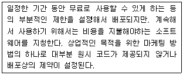
- 프리웨어(Freeware)
- 셰어웨어(Shareware)
- 비공개 소프트웨어(Closed software)
- 독점소프트웨어(Proprietary software)
(정답률: 73%)
3. 다음 중 모바일 기기에서 사용되는 리눅스 운영체제로 틀린 것은?
- Android
- LiMo
- Bada OS
- Mint
(정답률: 68%)
4. 다음 ( 괄호 ) 안에 들어갈 내용으로 알맞은 것은?
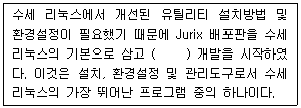
- yum
- apt-get
- YaST
- rpm
(정답률: 69%)
5. 다음 중 아시아눅스의 개발에 참여한 국가와 기업의 조합으로 틀린 것은?
- 홍기 리눅스 –중국
- 한글과컴퓨터 - 한국
- 엔터프라이즈 테크놀로지 - 미국
- 비에트 소프트웨어 - 베트남
(정답률: 67%)
6. 다음 설명에 해당하는 RAID의 종류로 알맞은 것은?
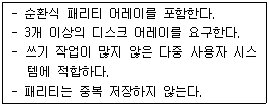
- RAID-0
- RAID-1
- RAID-5
- RAID-6
(정답률: 75%)
7. 리눅스 디렉터리 구조 중 시스템 설정과 관련된 파일이 있는 위치로 알맞은 것은?
- /bin
- /conf
- /opt
- /etc
(정답률: 76%)
8. 다음에서 설명하는 내용과 관련된 파일 시스템은 무엇인가?
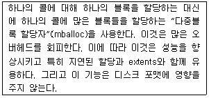
- ext3
- ext4
- FAT32
- NTFS
(정답률: 60%)
9. 다음 ( 괄호 ) 안에 들어갈 내용으로 알맞은 것은?
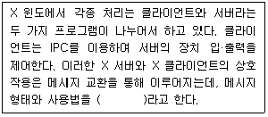
- X 메신저
- X 윈도
- X 터미널
- X 프로토콜
(정답률: 71%)
10. 현재 리눅스를 비롯하여 유닉스의 대부분이 이 프로젝트 기반의 X윈도 시스템을 사용하고 있으며, freedesktop.org와 함께 X윈도를 지속적으로 발전시키고 있는 곳으로 알맞은 것은?
- x-window.org
- x-win.org
- x.org
- x-window.com
(정답률: 70%)
11. 다음 셸 스크립트의 실행 결과로 알맞은 것은?
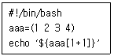
- 1
- 2
- 3
- ${aaa[1+1]}
(정답률: 57%)
12. 다음 셸 스크립트의 실행 결과로 알맞은 것은?
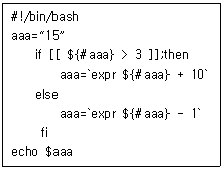
- 1
- 12
- 15
- 25
(정답률: 45%)
13. 다음 ( 괄호 ) 안에 들어갈 내용으로 알맞은 것은?
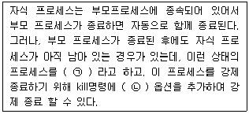
- ㉠ pending process ㉡ -0
- ㉠ zombie process ㉡ -0
- ㉠ pending process ㉡ -9
- ㉠ zombie process ㉡ -9
(정답률: 79%)
14. 다음 중 데몬을 실행하는 방법으로 틀린 것은?
- /etc/init.d/httpd restart
- /etc/rc.d/init.d/httpd start
- service httpd start
- service start httpd
(정답률: 70%)
15. 다음 중 보기의 실행결과와 동일하게 런레벨 3으로 부팅 시 httpd가 자동으로 실행되도록 하는 명령으로 알맞은 것은?
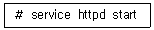
- chkconfig httpd on
- checkconf --level 3 httpd on
- sysconfig start httpd --level 3
- daemon start httpd
(정답률: 49%)
16. 다음 중 OSI 7 LAYER의 6계층과 거리가 먼 것은?(문제 오류로 가답안 발표시 3번으로 발표되었지만 확정답안 발표시 모두 정답 처리되었습니다. 여기서는 3번을 누르면 정답 처리 됩니다.)
- HTTP
- FTP
- SNMP
(정답률: 79%)
17. 다음에서 설명하는 장치의 이름으로 가장 알맞은 것은?
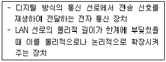
- Repeater
- Bridge
- Gateway
- Router
(정답률: 69%)
18. route 명령의 실행결과가 다음과 같을 때 169.254.0.0/16 대역의 라우팅 테이블을 삭제하려고 한다. ( 괄호 ) 안에 들어갈 내용으로 알맞은 것은?
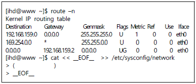
- NOZEROCONF=yes
- NOZEROCONF=no
- ZEROCONF=yes
- ZEROCONF=no
(정답률: 46%)
19. 다음 ( 괄호 ) 안에 들어갈 내용으로 알맞은 것은?
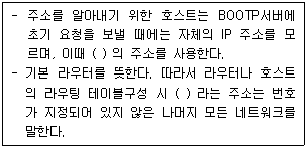
- 127.0.0.0
- 169.254.0.0
- 127.0.0.1
- 0.0.0.0
(정답률: 58%)
20. 다음은 nslookup 명령어 결과이다. www.ihd.or.kr 도메인에 대한 HOST IP를 출력하기 위해 수정해야 할 파일로 알맞은 것은?
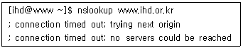
- /etc/resolv.conf
- /etc/dnsmasq.conf
- /etc/host.conf
- /etc/hosts
(정답률: 57%)
2과목: 리눅스 시스템 관리
21. 다음 중 접속한 계정에 대한 정보를 알 수 있는 명령어로 틀린 것은?
- who
- who i am
- whoiam
- whoami
(정답률: 54%)
22. 다음 중 사용자 ID 생성 및 관리와 관련된 내용으로 틀린 것은?
- /etc/passwd: 시스템 자원을 이용할 수 있는 로그인 사용자 목록이 저장된 파일이다.
- /etc/default/useradd: useradd 명령 실행 시, 참조하는 기본 정보 파일이다.
- /etc/shadow: passwd의 비밀번호 부분을 암호화 하여 관리하는 파일이다.
- /etc/default/skel: 계정 생성 시 해당 디렉터리의 파일을 사용자에게 기본 제공한다.
(정답률: 50%)
23. 다음 중 ihd 계정 생성 시 wheel을 2차 그룹으로 지정하고 UID를 1080으로 설정하는 명령으로 알맞은 것은?
- useradd -u 1080 ihd -G wheel
- useradd ihd -U 1080 -g wheel
- useradd -U 1080 -G wheel ihd
- useradd -u 1080 -g wheel ihd
(정답률: 55%)
24. 현재 접속한 나의 계정 및 그룹에 관련한 정보를 동시에 확인 할 수 있는 명령어로 알맞은 것은?
- w
- whoami
- id
- users
(정답률: 50%)
25. 다음 중 root 사용자로 변경 시 설정된 환경변수까지 반영하는 방법으로 알맞은 것은?
- su
- su -
- su -u
- su -u root
(정답률: 67%)
26. $HOME/.ssh/id_rsa 파일은 private key로써 반드시 유저를 제외한 그룹 및 모든 다른 사용자에게 읽기, 쓰기, 실행 권한이 없어야만 한다. 다음 명령 중 틀린 것은?
- chmod g-rwx,o-rwx $HOME/.ssh/id_rsa
- chmod go-rwx ~/.ssh/id_rsa
- chmod 600 $HOME/.ssh/id_rsa
- chmod 006 $HOME/.ssh/id_rsa
(정답률: 62%)
27. 다음 명령어에 대한 설명으로 가장 알맞은 것은?
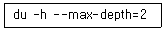
- 현재 디렉터리를 기준으로 하위 두 단계 아래의 파일 및 디렉터리에 대한 크기를 바이트 단위로 출력한다.
- 현재 디렉터리를 기준으로 하위 두 단계 아래의 파일 및 디렉터리에 대한 크기를 킬로바이트 단위로 출력한다.
- 현재 디렉터리를 기준으로 하위 두 단계 아래의 파일 및 디렉터리에 대한 크기를 바이트, 킬로바이트 단위로 출력한다.
- 현재 디렉터리를 기준으로 하위 두 단계 아래의 파일 및 디렉터리에 대한 크기를 사람이 보기 편한 형태(단위표시)로 출력한다.
(정답률: 67%)
28. 다음 중 디렉터리 안에 숨겨진 파일을 포함한 모든 리스트 상세정보를 아이노드 번호와 함께 출력하는 명령으로 알맞은 것은?
- ls -alF
- ls -ali
- ll
- ls –sAil
(정답률: 68%)
29. 디렉터리 내에 모든 파일 및 디렉터리 리스트 정보 중 일반파일만(d, l, s 등을 제외한 '-'로 표시되는 파일)을 출력하는 명령으로 알맞은 것은?
- ls -al |grep -v "^[a-zA-Z]"
- ls -ali |grep -Ev "^[d,l,s]"
- ls -ali |grep -v "^[d,l,s]"
- ls -al |fgrep -v "^[a-zA-Z]"
(정답률: 41%)
30. 다음에 제시된 /etc/passwd 파일을 기준으로 cut 명령을 실행 했을 때 결과로 알맞은 것은?
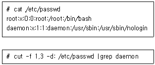
- de
- x
- daemon:1
- 1:daemon:/usr/sbin:/usr/sbin/nologin
(정답률: 58%)
31. vi 편집기를 사용하여 파일을 수정 중 <Ctrl+z> 키가 입력되어 편집 도중에 셸 화면으로 전환되었다. 다음 중 다시 편집을 계속하기 위한 명령으로 알맞은 것은?
- undo
- redo
- bg
- fg
(정답률: 48%)
32. 다음 중 웹서버 데몬의 상태를 확인하는 방법으로 가장 알맞은 것은?
- pstree aux |grep httpd
- grep httpd | ps -ef
- top -ef | grep httpd
- ps aux | grep httpd
(정답률: 65%)
33. 다음 중 tailf라는 단어가 포함된 모든 프로세스를 찾아서 강제 종료하는 명령어로 알맞은 것은?
- killall -9 tailf
- ps aux | grep tailf |awk '{print $1}' | xargs -9 kill
- pstree -p | grep tailf |awk '{print $2}' | xargs kill -9
- ps aux | grep tailf |awk '{print $2}' | xargs kill -9
(정답률: 50%)
34. 다음 명령어를 실행 했을 때의 결과로 알맞은 것은?
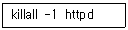
- 웹서버를 재시작 한다.
- httpd 데몬을 강제 종료한다.
- httpd 데몬을 강제 종료하고 전송결과를 출력한다.
- httpd 데몬을 백그라운드 프로세스상태로 전환 한다.
(정답률: 51%)
35. 다음 중 백그라운드로 작업 중인 프로세스나 현재 suspend 상태인 프로세스 목록의 PID만 추출하여 출력하는 명령으로 알맞은 것은?
- jobs -r
- jobs -p
- pstree -p
- pstree -r
(정답률: 65%)
36. 다음 중 현재 경로에 있는 vsftp-2.2.2-11.el6.i686.rpm 패키지를 설치하는 명령으로 알맞은 것은?
- dpkg -Uvh vsftp-2.2.2-11.el6.i686.rpm
- rpm -Uvh vsftp-2.2.2-11.el6.i686.rpm
- yum install vsftp
- dpkg -i vsftp-2.2.2-11.el6.i686.rpm
(정답률: 63%)
37. 다음 중 신규 yum repository를 추가하기 위해 해야 하는 작업과 디렉터리로 알맞은 것은?
- /etc/yum.d/ 디렉터리에 새로운 저장소 파일(.repo)을 추가 후, yum clean 명령을 실행 한다.
- /etc/yum.repo.d/ 디렉터리에 새로운 저장소 파일(.repo)을 추가 후, yum clean all 명령을 실행 한다.
- /etc/yum.conf/ 디렉터리에 새로운 저장소 파일(.repo)을 추가 후, yum refresh all 명령을 실행한다.
- /etc/yum.repos.d/ 디렉터리에 새로운 저장소 파일(.repo)을 추가 후, yum clean all 명령을 실행 한다.
(정답률: 47%)
38. 다음 중 yum을 통해 telnet 패키지를 검색하여 바로 설치하는 과정으로 알맞은 것은?
- yum find telnet 검색 후, yum install telnet -y 명령어로 바로 설치
- yum find telnet 검색 후, yum -Uvh telnet 명령어로 바로 설치
- yum search telnet 검색 후, yum install telnet -y 명령어로 바로 설치
- yum search telnet 검색 후, rpm -Uvh telnet 명령어로 바로 설치
(정답률: 65%)
39. 다음 중 tar로 하나로 묶어진 파일의 내용을 확인하는 명령으로 알맞은 것은?
- tar tgv ihd.tar
- tar vtf ihd.tar
- tar xvf ihd.tar
- tar cfv ihd.tar
(정답률: 52%)
40. 다음 중 압축파일을 압축 해제하는 명령으로 틀린 것은?
- zip -d ihd.zip
- tar zxvf ihd.tz
- gzip -d ihd.tz
- gunzip ihd.tz
(정답률: 46%)
41. 커널 컴파일(Compile)에 대한 설명으로 틀린 것은?
- 커널 소스를 다운로드하여 사용하는 시스템에 최적화된 커널을 만드는 과정이다.
- 커널 컴파일 과정을 통해 불필요한 항목을 제거할 수 있다.
- 커널 컴파일을 통해 사용하는 시스템의 안정성과 성능을 향상 할 수 있다.
- 커널 컴파일 전 먼저 커널 버전의 소스를 /usr/src/kernel 디렉터리에 다운로드한다.
(정답률: 48%)
42. 다음 ( 괄호 ) 안에 들어갈 명령으로 알맞은 것은?
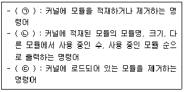
- ㉠ modprobe ㉡ lsmod ㉢ rmmod
- ㉠ insmod ㉡ listmod ㉢ delmod
- ㉠ modprobe ㉡ lsmod ㉢ delmod
- ㉠ insmod ㉡ lstmod ㉢ rmmod
(정답률: 62%)
43. 다음 ( 괄호 ) 안에 들어갈 내용으로 알맞은 것은?
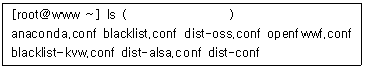
- /usr/modprobe.conf
- /lib/modprobe.conf
- /etc/modprobe.d
- /usr/local/modprobe.d
(정답률: 41%)
44. 다음 중 커널 소스의 설정 값 초기화 하는 명령으로 알맞은 것은?
- make bzimage
- make modules
- make install
- make mrproper
(정답률: 61%)
45. 다음 설명으로 알맞은 것은?
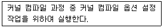
- make menuconfig
- make modules
- make mrproper
- make install
(정답률: 61%)
46. 다음 중 디스크 추가 장착 시 인식 여부를 확인 하는 명령으로 알맞은 것은?
- fdisk -l
- fdisk -L
- fdisk -v
- fdisk -s
(정답률: 58%)
47. 다음 중 리눅스 부팅 시 자동으로 마운트 되도록 설정하는 파일로 알맞은 것은?
- /etc/autofs
- /etc/grub
- /etc/inittab
- /etc/fstab
(정답률: 62%)
48. 다음 ( 괄호 ) 안에 들어갈 내용으로 알맞은 것은?
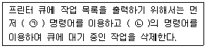
- ㉠ lpq ㉡ lprm
- ㉠ lp ㉡ cancel
- ㉠ lp ㉡ lprm
- ㉠ lpq ㉡ lpr
(정답률: 56%)
49. 다음 중 /etc/passwd 파일을 2매 출력하고자 할 때 ( 괄호 ) 안에 들어갈 옵션으로 알맞은 것은?
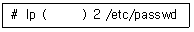
- -d
- -n
- -P
- -t
(정답률: 63%)
50. 다음 중 GUI 기반으로 평판 스캐너나 카메라로부터 이미지를 스캔해 주는 도구로 알맞은 것은?
- sane-find-scanner
- alsa
- scanadf
- xcam
(정답률: 43%)
51. 다음 중 logrotate에 관한 설명으로 알맞은 것은?
- 자동 로테이션, 압축 및 암호화 기능을 지원한다.
- 로그파일을 여러 개로 분할, 통합 할 수 있다.
- 로그 설정은 /etc/logrotate.conf에서 가능하다.
- 시, 분, 초 단위로 로테이션 할 수 있다.
(정답률: 40%)
52. 시스템 로그 설정 중 인증 관련 로그를 root 및 admin 사용자의 터미널로 전송하려 한다. 다음 중 ( 괄호 ) 안에 들어갈 내용으로 알맞은 것은?
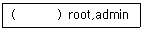
- *.emerg
- *.alert
- syslog.*
- authpriv.*
(정답률: 58%)
53. 다음 중 ihd 사용자의 로그인 정보를 확인하는 명령어로 틀린 것은?
- dmesg ihd
- last ihd
- lastlog -u ihd
- lastb ihd
(정답률: 44%)
54. 다음 중 ihd 사용자의 로그인 실패한 기록만 확인하는 명령으로 알맞은 것은?
- last ihd
- lastb ihd
- lastlog -u ihd
- lastlog -t 3
(정답률: 62%)
55. 다음 중 인증키를 이용한 SSH 서버 접속과 가장 거리가 먼 것은?
- ssh-keygen
- .ssh/id_rsa.pub
- .ssh/authorized_keys
- /lib/security
(정답률: 59%)
56. 다음 설명에 해당하는 보안 도구로 알맞은 것은?
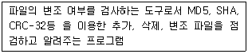
- GnuPG
- nmap
- tripwire
- John The Ripper
(정답률: 55%)
57. 다음 중 SELinux의 상태와 관련된 모드로 틀린 것은?
- active
- disabled
- enforcing
- permissive
(정답률: 45%)
58. crontab을 이용한 백업 설정을 하려 한다. 다음 설명에 해당하는 설정으로 알맞은 것은?
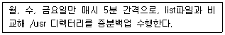
- * */5 * * 2,4,6 tar -g list -cvfp backup.tar /usr
- * */5 * * 2,4,6 tar -N list -cvfp backup.tar /usr
- */5 * * * 1,3,5 tar -g list -cvfp backup.tar /usr
- */5 * * * 1,3,5 tar -N list -cvfp backup.tar /usr
(정답률: 56%)
59. 다음에서 설명하는 백업 명령어로 알맞은 것은?
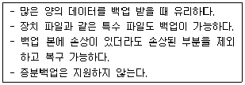
- dd
- cpio
- dump
- rsync
(정답률: 45%)
60. 다음 중 rsync에 대한 설명으로 알맞은 것은?
- 그룹을 포함한 소유권, 허가권을 유지하여 복사가 가능하지만 디바이스 파일은 복사가 불가능하다.
- ftp를 이용하여 전송이 가능하고 root권한이 필요하지 않다.
- 하위디렉터리의 그룹 소유권까지 보존하여 복사하는 옵션은 -r 이다.
- root계정으로 네트워크를 이용하여 원격지에 파일 동기화가 가능하다.
(정답률: 44%)
3과목: 네트워크 및 서비스의 활용
61. 아파치 웹 서버는 DSO(Dynamic Shared Object) 방식을 지원하여 좀 더 유연한 웹서버를 구성할 수 있게 해준다. 다음 중 DSO 방식에 대한 단점의 내용으로 틀린 것은?
- DSO 매커니즘은 프로그램 코드를 알맞은 주소 공간에 동적으로 적재시킬 수 있는 기능을 지원하지 않는 특정 운영체제에서는 사용할 수 없다.
- DSO 방식을 사용하지 않는 것과 비교해서 일반적으로 웹 서버를 구동하는 데에 필요한 시간이 좀 더 많이 필요하다
- 웹 서버를 운영하는 데에 있어서 DSO 방식을 사용하지 않는 것과 비교하여 일반적으로 성능이 떨어진다고 알려져 있다.
- 웹 서버에 DSO 모듈들을 적재시켜야 하므로, 다른 모듈이 추가적으로 필요한 경우 웹서버 전체를 다시 컴파일 하여야 하는 단점이 존재한다.
(정답률: 46%)
62. Apache 설정 파일이 다음과 같을 때 관련 설명으로 틀린 것은?
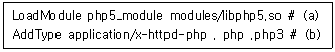
- DSO 방식으로 php 모듈이 적재되어 사용된다.
- 정적 라이브러리 방식으로 php를 컴파일 했다면 (a) 설정은 필요 없다.
- html 확장자는 Apache에 의해 해석되기 때문에 (b) 설정에 추가할 수 없다.
- 사용하고자 하는 php 스크립트의 확장자를 (b) 설정에 추가할 수 있다.
(정답률: 49%)
63. 다음은 dhcpd.conf 파일의 일부로 특정 MAC 주소를 갖는 시스템에 고정적인 IP 주소를 할당해 주려고 한다. ( 괄호 ) 안에 들어갈 내용으로 알맞은 것은?
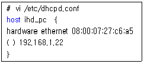
- fixed-address
- mac-address
- address
- ip-address
(정답률: 61%)
64. 다음은 역 존(Reverse zone) 파일을 설정하는 내용이다. IP주소가 192.168.12.22일 경우 ( 괄호 ) 안에 들어갈 내용으로 가장 알맞은 것은 ?
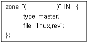
- 12.168.192.in-addr.arpa
- 192.168.12.in-addr.arpa
- 192.168.12.22.in-addr.arpa
- 22.12.168.192.in-addr.arpa
(정답률: 52%)
65. DHCP 서버에서 Mac address를 이용해서 서버나 호스트의 위치를 알아낼 때 사용하는 프로토콜은?
- ARP (Address Resolution Protocol)
- TCP (Transmission Control Protocol)
- IGRP (Internet Gateway Routing Protocol)
- ICP (Internet Cache Protocol)
(정답률: 67%)
66. 다음 중 LDAP 속성에 대한 설명으로 틀린 것은?
- o : 최상의 조직
- ou : 조직의 부서
- cn : 가장 일반적인 이름
- objectClass : 학교에서 사용하는 조직
(정답률: 56%)
67. proftpd를 운영하고 있는 서버에 일반 사용자 계정으로는 로그인이 가능하지만 anonymous 계정으로는 로그인되지 않는다. 다음 중 관련 설명으로 틀린 것은?
- 설정 파일 안에 <Anonymous> ..</Anonymous> 지시자가 없다.
- RequireValidShell 지시자의 값이 Off이다.
- /etc/passwd 파일에 ftp 사용자에 대한 설정이 없다.
- ftp 사용자의 홈 디렉터리에 대한 소유자나 권한이 잘못 설정되어 있다.
(정답률: 38%)
68. nfs 클라이언트에서 nfs 서버인 ihd의 특정 디렉터리를 마운트 하기 위한 /etc/fstab파일의 설정으로 알맞은 것은 ?
- /ihd/proc /mnt/ihd nfs defaults 0 0
- ihd:/home /mnt/ihd nfs defaults 0 0
- /mnt/ihd ihd:/tmp nfs defaults 0 0
- /home:ihd /mnt/ihd defaults 0 0
(정답률: 46%)
69. 다음은 MySQL의 소스 컴파일 설치 과정 중 한 부분이다. 이와 관련된 설명으로 틀린 것은 ?
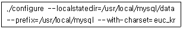
- --prefix=/usr/local/mysql는 MySQL이 설치된 홈 디렉터리를 지정하는 옵션이다.
- --localstatedir=/usr/local/mysql/data는 MySQL의 데이터들을 /usr/local/mysql/data에 저장시키기 위한 옵션이다.
- --with-charset=euc_kr은 MySQL에서 한글 사용을 가능하게 해주는 옵션이다.
- 이 작업의 결과 /usr/local/mysql/data에 mysql과 test 두 개의 DB가 생성된다.
(정답률: 57%)
70. NTP는 클럭소스 수준의 계층적, 반 계층화(Semi-layered)된 시스템을 사용하고 이 계층 구조의 각 수준을 계급(Stratum)이라 한다. 다음 중 계급에 대한 설명으로 틀린 것은?
- 계급 수준은 레퍼런스 시계에서 거리를 정의 한다.
- 계급구조의순환종속성을방지하기위해존재한다.
- 계급 3시간 소스보다 계급 2시간 소스가 더 품질이 우수하다.
- 계급 0은 원자시계 GPS 시계 또는 다른 무선 시계 같은 장치이다.
(정답률: 49%)
71. 프록시 서버의 일종인 squid에 대한 설명으로 틀린 것은?
- squid는 사용자가 요청한 파일을 서버에 남겨둠으로써 같은 파일에 대한 추후 요청보다 신속하게 서비스 한다
- squid는 다수의 서비스(예를 들어 ftp, telnet, http 등)를 동시에 지원하지 못하며 따라서 초기 설정 시 캐싱을 지원하고자 하는 서비스를 지정하여야 한다.
- squid.conf 설정 파일을 이용하여 사용할 캐싱 공간의 크기를 지정할 수 있다
- squid를 정상적으로 설정하기 위해서는 시스템에 squid라는 사용자를 추가해야 한다.
(정답률: 41%)
72. 현재 리눅스 가상화에서 가장 많이 사용되는 KVM에 대한 설명으로 틀린 것은?
- KVM은 CPU에서 가상화를 지원해야 한다.
- Kernel 2.6.20부터 리눅스 커널 메인라인에 들어간 커널 모듈 형태이다.
- KVM은 모든 장치에 대해 전가상화만을 제공한다.
- 호스트 서버에서 보면 게스트 서버는 하나의 프로세스로 간주되기 때문에 오버헤더가 거의 없다.
(정답률: 53%)
73. 스팸메일(SpamMail)로부터 센드메일(SendMail)을 보호하기 위한 /etc/mail/access 파일의 메일 릴레이 기능에 대한 설정 중 행동 양식에 대한 설명으로 틀린 것은?
- Relay - 지정된도메인에서들어오는메일의중계허용
- Reject - 지정된 도메인에서 들어오는 메일을 거부 메시지 없이 폐기
- 501 - 지정된 메일 주소와 일치하는 메일 수신 거부
- 550 - 지정된 도메인과 관련된 모든 메일 수신 거부
(정답률: 57%)
74. 다음의 PHP 소스 파일이 정상적으로 실행되게 하기 위해 php.ini 파일을 수정하려고 한다. 다음 중 관련 항목 및 설정값으로 알맞은 것은?
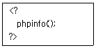
- short_open_tag = On
- short_open_tag = Off
- open_short_tag = On
- open_short_tag = Off
(정답률: 41%)
75. 인증 없이 삼바 서버에 접근 가능하도록 설정하려고 한다. 다음 ( 괄호 )안에 들어갈 내용으로 알맞은 것은?
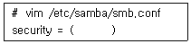
- all
- users
- user
- share
(정답률: 51%)
76. 다음에서 설명하는 NFS 서버 설정 옵션으로 알맞은 것은?
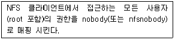
- root_squash
- no_root_squash
- all_squash
- anonuid
(정답률: 51%)
77. 다음 ( 괄호 ) 안에 들어갈 내용으로 알맞은 것은?
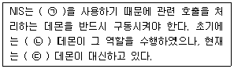
- ㉠ BIND ㉡ rpcbind ㉢ portmap
- ㉠ BIND ㉡ portmap ㉢ rpcbind
- ㉠ RPC ㉡ rpcbind ㉢ portmap
- ㉠ RPC ㉡ portmap ㉢ rpcbind
(정답률: 46%)
78. 다음 중 아파치에서 사용자 인증 파일을 생성하고 관리해 주는 명령어로 알맞은 것은?
- apxs
- chpasswd
- ab
- htpasswd
(정답률: 57%)
79. 다음 중 192.168.12.22번의 IP 주소를 사용하는 윈도우 시스템의 공유 폴더를 확인하는 명령으로 알맞은 것은 ?
- smbclient -M 192.168.12.22
- smbclient -L 192.168.12.22
- smbclient -D 192.168.12.22
- smbclient -U 192.168.12.22
(정답률: 52%)
80. 다음은 관련 파일 수정 후 적용 시키는 과정이다. ( 괄호 ) 안에 들어갈 내용으로 알맞은 것은 ?
- ㉠ m4 ㉡ >
- ㉠ m4 ㉡ <
- ㉠ makemap hash ㉡ >
- ㉠ makemap hash ㉡ <
(정답률: 34%)
81. 다음은 DNS 서버로 들어오는 도메인 질의 요청을 다른 DNS 서버로 넘기는 설정을 하려고 한다. ( 괄호 ) 안에 들어갈 내용으로 알맞은 것은 ?
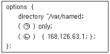
- ㉠ forward ㉡ forwarder
- ㉠ forward ㉡ forwarders
- ㉠ forwarder ㉡ forward
- ㉠ forwarders ㉡ forward
(정답률: 49%)
82. 아파치 웹 서버의 환경 설정에서 서버의 설정, 에러 로그파일 등이 기록되는 서버 루트 디렉터리의 기본 경로를 지정해 주는 항목으로 알맞은 것은?
- DocumentRoot "/usr/local/apache/htdocs"
- PidFile /usr/local/apache/logs/httpd.pig
- ServerRoot "/usr/local/apache"
- ScoreBoardFile /usr/local/apache/logs/httpd.scoreboard
(정답률: 51%)
83. 요청 받은 Name Resolution의 결과 데이터를 일정기간 별도로 저장하고 만일 같은 내용에 대한 요청이 들어오면 저장해 둔 데이터를 가지고 즉시 답변 해주는 DNS 서버의 종류로 알맞은 것은?
- Primary Server
- Secondary Server
- Caching Server
- Proxy Server
(정답률: 62%)
84. 프록시 서버에 대한 설명으로 가장 알맞은 것은?
- 네트워크상의 모든 호스트가 동일한 계정으로 가지게 하여 마치 단일 시스템처럼 보이게 한다.
- 도메인 내부에 들어오는 요청을 필터링 함으로써 일종의 방화벽 역할을 할 수 있다.
- 원격 호스트의 프로세스 생성에 관여한다.
- 프린터와 같은 각종 주변 기기를 공유하는데 사용하기도 한다.
(정답률: 55%)
85. xinetd의 설정 파일인 /etc/xinetd.conf에서 사용되는 변수에 대한 설명으로 틀린 것은?
- socket_type : stream, dgram, raw값을지정할수있다.
- user : 서비스를 사용할 사용자의 이름이다.
- wait : 서비스 처리에 걸리는 시간을 지정한다.
- server : 서비스가연결되었을때실행할프로그램이다.
(정답률: 40%)
86. 다음 중 Xen에 대한 설명으로 알맞은 것은?
- 커널의 소스에 삽입되어 무겁고 다양한 인터페이스를 제공해 무거운 용량과 다양한 인터페이스를 제공한다.
- 대부분 메인 컨트롤 스택은 소스를 수정할 수 있는 리눅스에만 설치된다.
- 가상머신 내에서 실행하는 주장치 드라이버를 허용하는 기능이 있다.
- Xen은 반가상화 전용으로 개발되어 다른 하이퍼바이저에 비해 빠르다.
(정답률: 35%)
87. sendmail의 alias 기능에 대한 설명으로 틀린 것은?
- 사용자들에게 정상 이메일 주소 이외에 다른 이름을 부여해줄 수 있다.
- 메일링 리스트를 작성할 수 있다.
- 수신된 메일 메시지와 이를 처리하는 외부 프로그램을 연계 시켜줄 수 있다.
- 특정 호스트로부터 보내진 메일을 거부할 수 있다.
(정답률: 47%)
88. 다음 중 NoSQL에 대한 설명으로 틀린 것은?
- SQL 인터페이스를 제공하지 않는 경량형 데이터베이스이다.
- NoSQL은 관계형 데이터 모델이 아닌 키-값 모델이다.
- NoSQL은 데이터의 정합성에 대한 요구 사항보다는 단절내성에 대한 요구사항이 더 중요하다.
- SQLite, MongoDB, Canssandra 등이 NoSQL에 속한다.
(정답률: 40%)
89. 다음에서 설명하는 아파치 웹서버의 MPM(Multi-Processing Module)으로 알맞은 것은?
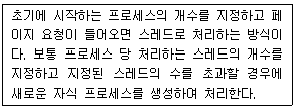
- prefork
- worker
- BeOS
- OS/2
(정답률: 52%)
90. 다음 중 NIS 도메인명을 부팅 시 적용할 때 설정하는 파일로 알맞은 것은?
- /etc/hosts
- /etc/sysconfig/network
- /etc/resolv.conf
- /etc/networks
(정답률: 45%)
91. 다음 중 vsftpd.conf 설정에서 하나의 IP 주소 당 허용할 최대 접속수를 지정하는 항목으로 알맞은 것은?
- max_per_ip=3
- max_per_client=3
- max_per_address=3
- max_per_ip_address=3
(정답률: 37%)
92. 다음 중 일종의 대리인 역할을 수행하는 프로그램으로 메일 박스에 도착한 메일을 대행해서 가져오거나 전달하는 역할을 수행하는 프로그램으로 알맞은 것은?
- MDA (Mail Delivery Agent)
- MUA (Mail User Agent)
- MTA (Mail Transfer Agent)
- IMAP (Internet Mail Access Protocol)
(정답률: 57%)
93. 다음 중 발신 도메인을 강제적으로 지정하기 위해 사용하는 sendmail.cf 파일 항목으로 알맞은 것은?
- Cw
- Fw
- Dj
- Dw
(정답률: 56%)
94. 다음 설명으로 알맞은 것은?
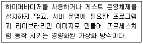
- OpenStack
- Docker
- CloudStack
- OpenShift
(정답률: 59%)
95. xinetd 관련 로그를 별도의 파일인 /var/log/xinetd.log에 저장하려고 한다. 다음 중 관련 설정으로 알맞은 것은?
- log_type = FILE /var/log/xinetd.log
- log_type = SYSLOG /var/log/xinetd.log
- log_type = /var/log/xinetd.log
- log_file = /var/log/xinetd.log
(정답률: 36%)
96. 다음은 시스템 침입에 대한 설명이다. 다음 중 시스템 침입의 방식과 종류가 다른 것은?
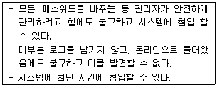
- 패스워드 크래킹
- Dos Attack
- Login 백도어
- 루트킷(Rootkit)
(정답률: 43%)
97. 다음에서 설명하는 해킹 도구로 알맞은 것은?
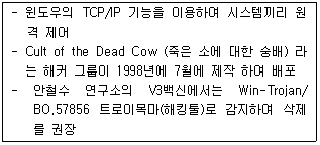
- Prorat
- Netbus
- Subseven
- Back orifice
(정답률: 45%)
98. 다음 중 iptables의 3가지 체인으로 틀린 것은?
- INPUT
- DROP
- OUTPUT
- FORWARD
(정답률: 44%)
99. 다음 중 badman.com에서 ssh를 통해 침입을 시도 하려고 한다. 해당 도메인의 침입을 막기 위해 조치 할 수 있는 명령어 혹은 파일로 틀린 것은?
- /etc/sysconfig/iptables
- /etc/hosts.deny
- iptables
- selinux
(정답률: 53%)
100. 다음과 같이 명령어를 실행 할 때 내려지는 정책에 대한 설명으로 알맞은 것은?
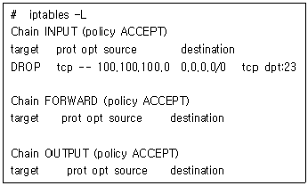
- 100.100.100.0 대역으로 들어오는 모든 패킷이 차단된다.
- 해당 서버에서 100.100.100.0 대역의 서버로 telnet 접속이 차단된다.
- 100.100.100.120 시스템에서 해당 서버로 telnet 접속이 차단된다.
- 해당 정책으로는 telnet 접속을 막을 수 없다.
(정답률: 43%)
하지만, 대화형 처리(Interactive Processing)는 사용자와 컴퓨터 간의 상호작용을 통해 작업을 처리하는 것을 의미한다. 따라서 이는 사용자 편리성(user convenience)과 밀접한 관련이 있다.
효율적 사용(efficient use)은 시스템 자원을 효율적으로 사용하여 성능을 최적화하는 것을 의미하고, 비간섭(noninterference)은 한 작업이 다른 작업에 영향을 미치지 않도록 하는 것을 의미한다.
따라서, 운영체제의 목적은 효율적 사용, 사용자 편리성, 비간섭, 그리고 대화형 처리를 포함한다.